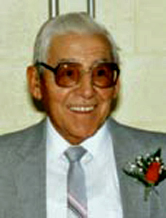

ANTOINE BEAUDOIN
notre ancêtre de la 8ième génération
Histoire

Son enfance se passa entre Hull et Masham où il fit ses études au Collège Notre-Dame de Hull.
Vers les années 1929-30, il travailla un certain temps à titre de préposé aux chevaux au complexe de villégiature du Château Montébello. À la recherche d'un emploi il quitta la demeure paternelle de Hull à la fin de décembre 1933, il passe le Jour de l'An chez son frère Herménégilde à North-Cobalt, Ont. pour arriver à Duparquet le 2 janvier 1934, le voyage se fit par train jusqu'à Noranda et avec le taxi Gagnon jusqu'à Duparquet, il faisait extrêmement froid. Au cours de cet hiver il travaille à temps partiel pour la mine et au magasin d'Émile Brazeau à titre de commis et de cuisinier. Il a réussi à s'habiller pour l'hiver et payait un dollar par
jour pour sa chambre et pension.
Par la suite il fût engagé en permanence à la mine Beattie car il était un très bon sportif, où il y occupa à tour de rôle les postes de journalier, opérateur du moulin où il y réalisa avec son ami Léo Couillard la première coulée de briques d'or. Mécanicien et contremaître de quart au moulin, il y travailla jusqu'à la fermeture de la mine en 1957. Puis en 1960 il termina sa carrière dans les mines à la Spanish-American Mines à Elliot-Lake en Ontario, à titre de contremaître de quart dans le moulin.
Au cours des années qu'il vécu à Duparquet il fut très actif dans tous les sports: gardien de but au hockey, 2ième but et lanceur au "Fast Ball", amateur de quilles, curling et golf en plus de faire la pèche et la chasse au petit gibier avec son gros fusil de calibre 12 à deux canons. Il fut très actif à titre de pompier volontaire, de Chevalier de Colomb, il fut le Grand-Chevalier du conseil 2593. Le 7 mars 1946 il fût élu pour la première fois échevin au conseil de ville. Un grand amateur de parties de cartes.
C'est en 1940 qu'il installe sa famille dans la maison de la rue Maxwell et en 1960 qu'il la déménage à Noranda, où il fut représentant "Fuller-Brush", agent de sécurité au centre hospitalier de Rouyn-Noranda pour Nil Lafrenière, gardien de nuit chez Marcel Baril Inc. et chez Bradley & Frères.
Parrain de: Raymonde Champagne, Lise Thérien, Réal Beaudoin, Guy Lussier et Éric Beaudoin.
Il passa les dernières années de sa vie à sa résidence du 255 rue Taschereau ouest de Rouyn-Noranda où il décéda au Centre Hospitalier de Rouyn-Noranda le 21 décembre 1997.
-------------------------------------------------------------------------------